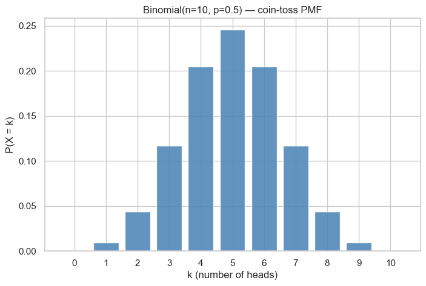
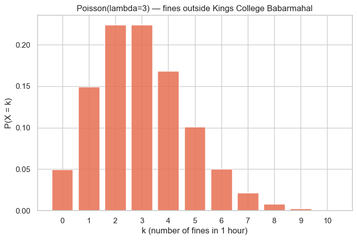
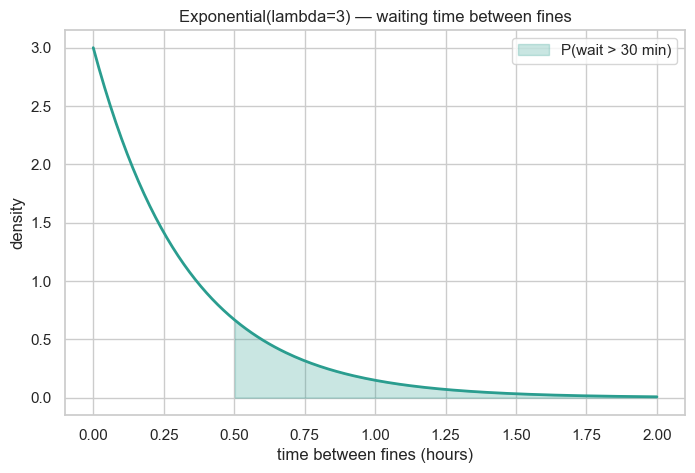
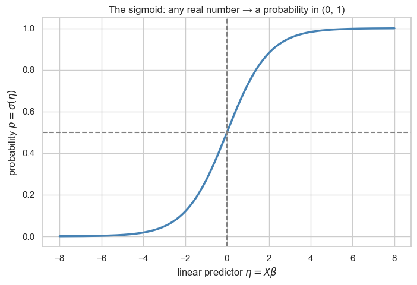
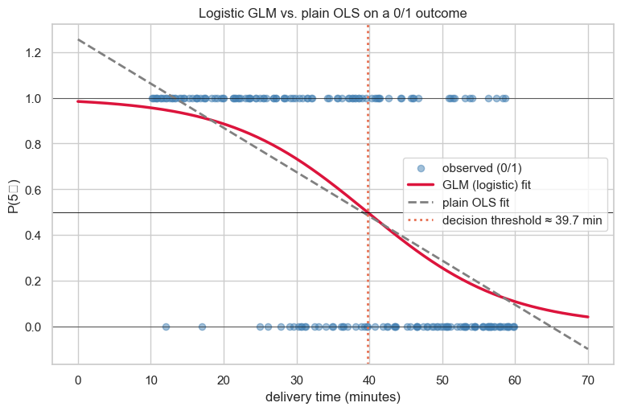
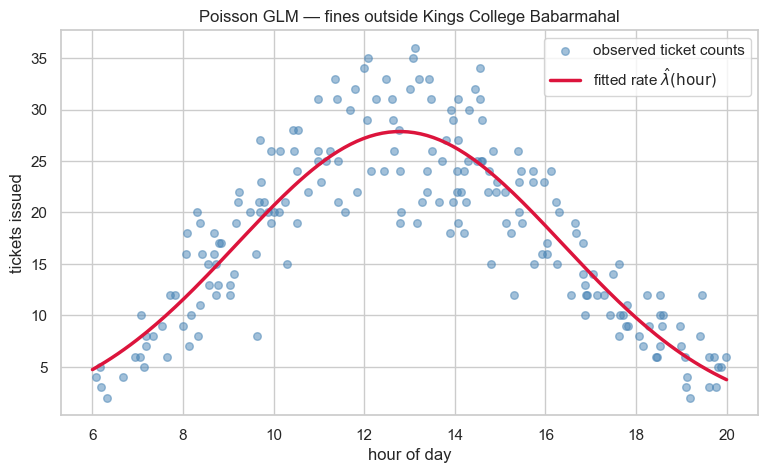

Generalized Linear Models (GLM)¶
Data 200 · Applied Statistical Analysis · Instructor: Aayush Regmi
Plain linear regression is wonderful when the outcome you're trying to predict is a real-valued, unbounded number (sales, exam score, house price). The moment your outcome looks different — yes/no, counts of events, waiting time — the assumptions of OLS quietly fall apart.
Generalized Linear Models (GLMs) are the principled fix. They keep the familiar linear predictor \(X\boldsymbol\beta\) but allow:
- the outcome \(y\) to come from a wider family of distributions (not just Normal — also Binomial, Poisson, Gamma, Exponential, …),
- a link function to bridge the linear predictor and the outcome's natural scale.
By the end of this notebook you'll see that ordinary linear regression is one special case of GLM, and you'll fit two more (logistic and Poisson) on synthetic but believable data.
Learning Objectives¶
By the end of this notebook you will be able to:
- Explain the three components of a GLM — random component, systematic component, link function — and recognise that \(y = mx + c\) is just GLM with a Normal random component and an identity link.
- Compute probabilities for the Binomial, Poisson, and
Exponential distributions both by formula and with
scipy.stats. - State the general formula of the exponential family and identify its pieces.
- Derive the canonical link for the Binomial (\(\ln\frac{p}{1-p}\), the logit) and for the Poisson (\(\ln\lambda\)).
- Explain the sigmoid function and how it serves as the inverse link for a Binomial GLM.
- Fit and interpret a logistic GLM and a Poisson GLM in
statsmodels, and visualise their fitted curves.
Setup¶
import numpy as np
import pandas as pd
import matplotlib.pyplot as plt
import seaborn as sns
from scipy import stats
from math import comb, factorial
import statsmodels.api as sm
import statsmodels.formula.api as smf
sns.set_theme(style="whitegrid")
plt.rcParams["figure.figsize"] = (8, 5)
rng = np.random.default_rng(0)
1. What GLM Solves¶
Plain linear regression assumes
It expects \(y\) to be a real, continuous, unbounded number with Normally distributed errors. That's a great fit for sales, exam scores, or house prices, but it falls apart for outcomes like:
| Question | Outcome looks like… | OLS problem |
|---|---|---|
| Will this customer churn? | 0 / 1 (yes / no) | A line through 0/1 data goes below 0 and above 1 — meaningless probabilities. |
| How many calls will arrive in the next hour? | non-negative integer | A line can predict \(-3\) calls. |
| How long until the next bus? | positive real number | Same — predictions can go negative. |
GLM's pitch in one sentence: keep the linear predictor \(X\boldsymbol\beta\) — but let \(y\) come from a suitable distribution and put a link function in between to keep the prediction on the right scale.
Linear regression said \(y = mx + c\). GLM says \(f(\mu) = mx + c\) where \(\mu\) is the mean of \(y\) and \(f\) is the link function. That's the whole generalisation in a single line.
2. The Three Components of a GLM¶
Every GLM is built from three pieces.
- Random component — what kind of \(y\) is it? Pick a distribution from the exponential family that matches your outcome:
- Continuous & unbounded → Normal
- Binary or counts of successes → Binomial
- Counts of events per interval → Poisson
-
Waiting times → Exponential (or Gamma)
-
Systematic component — the linear predictor. The same workhorse from OLS: \(\(\eta \;=\; X\boldsymbol\beta \;=\; \beta_0 + \beta_1 x_1 + \cdots.\)\)
-
Link function \(g(\cdot)\) — the bridge. Connects the mean \(\mu = \mathbb{E}[y]\) to the linear predictor \(\eta\): \(\(g(\mu) \;=\; \eta \;=\; X\boldsymbol\beta.\)\)
And the punchline: ordinary linear regression is GLM with a Normal random component and the identity link \(g(\mu) = \mu\). Everything we are about to do is just changing the first and third pieces.
| Outcome type | Distribution | Canonical link \(g(\mu)\) |
|---|---|---|
| Continuous unbounded | Normal | identity: \(\mu\) |
| Binary / proportion | Binomial | logit: \(\ln\!\frac{p}{1-p}\) |
| Counts | Poisson | log: \(\ln \lambda\) |
| Positive continuous | Gamma / Exponential | reciprocal or log |
We'll meet the second and third rows in detail.
3. Three Distributions GLMs Love — A Refresher¶
3.1 Binomial — counting successes in \(n\) trials¶
If you flip a coin \(n\) times and each flip is independently a success with probability \(p\), the number of successes \(X\) follows a Binomial distribution:
Coin-toss numerical example¶
A fair coin (\(p = 0.5\)) is flipped 10 times. Let's compute three
probabilities, both by formula and with scipy.stats.binom.
n, p = 10, 0.5
# (a) P(X = 5) — exactly five heads
p_eq_5 = comb(n, 5) * p**5 * (1 - p)**(n - 5)
p_eq_5_sp = stats.binom.pmf(5, n, p)
print(f"P(X = 5) formula: {p_eq_5:.4f} scipy: {p_eq_5_sp:.4f}")
# (b) P(X >= 1) — at least one head = 1 - P(no heads at all)
p_ge_1 = 1 - p**0 * (1 - p)**n
p_ge_1_sp = 1 - stats.binom.cdf(0, n, p)
print(f"P(X >= 1) formula: {p_ge_1:.4f} scipy: {p_ge_1_sp:.4f}")
# (c) P(X <= 1) — at most one head
p_le_1 = (1 - p)**n + n * p * (1 - p)**(n - 1)
p_le_1_sp = stats.binom.cdf(1, n, p)
print(f"P(X <= 1) formula: {p_le_1:.4f} scipy: {p_le_1_sp:.4f}")
P(X = 5) formula: 0.2461 scipy: 0.2461
P(X >= 1) formula: 0.9990 scipy: 0.9990
P(X <= 1) formula: 0.0107 scipy: 0.0107
ks = np.arange(0, n + 1)
plt.bar(ks, stats.binom.pmf(ks, n, p), color="steelblue", alpha=0.85)
plt.xlabel("k (number of heads)"); plt.ylabel("P(X = k)")
plt.title("Binomial(n=10, p=0.5) — coin-toss PMF")
plt.xticks(ks); plt.show()

A second binomial example — the basketball free-throw shooter¶
A player makes 70% of their free throws (\(p = 0.7\)). They shoot 8 free throws. What's the probability they make at least 6?
n_ft, p_ft = 8, 0.7
# By formula
p_ge_6_formula = sum(comb(n_ft, k) * p_ft**k * (1 - p_ft)**(n_ft - k)
for k in range(6, n_ft + 1))
p_ge_6_sp = 1 - stats.binom.cdf(5, n_ft, p_ft)
print(f"P(makes >= 6 of 8) formula: {p_ge_6_formula:.4f}")
print(f"P(makes >= 6 of 8) scipy: {p_ge_6_sp:.4f}")
P(makes >= 6 of 8) formula: 0.5518
P(makes >= 6 of 8) scipy: 0.5518
3.2 Poisson — counting events per interval¶
Use Poisson when you're counting how many events occur in a fixed interval of time (or space), at a roughly steady average rate \(\lambda\):
Both the mean and variance equal \(\lambda\) — that's the Poisson's signature.
Example 1 — call center¶
A small call center receives an average of 5 calls per hour.
lam = 5 # average calls per hour
# (a) P(X = 7) — exactly seven calls in an hour
p_7_formula = (lam**7 * np.exp(-lam)) / factorial(7)
p_7_sp = stats.poisson.pmf(7, lam)
print(f"P(exactly 7 calls) formula: {p_7_formula:.4f} scipy: {p_7_sp:.4f}")
# (b) P(X >= 10) — overload — at least ten calls
p_ge_10 = 1 - stats.poisson.cdf(9, lam)
print(f"P(at least 10 calls): {p_ge_10:.4f}")
P(exactly 7 calls) formula: 0.1044 scipy: 0.1044
P(at least 10 calls): 0.0318
Example 2 — traffic police outside Kings College Babarmahal¶
A traffic officer issues fines for wrongly parked bikes outside the college gate. On a typical morning, fines arrive at the rate of 3 per hour.
- What's the probability the officer issues exactly 5 fines in one hour?
- What's the probability of at least 1 fine in a 20-minute window? (For a 20-minute window the rate is \(\lambda = 3 \times \frac{20}{60} = 1\).)
lam_hour = 3 # fines per hour
p_5_hour = stats.poisson.pmf(5, lam_hour)
print(f"P(exactly 5 fines in 1 hour, lambda=3): {p_5_hour:.4f}")
lam_20min = 3 * 20 / 60 # rate scales with the interval — 1 fine / 20 min
p_ge_1_20min = 1 - stats.poisson.pmf(0, lam_20min)
print(f"P(at least 1 fine in 20 minutes, lambda=1): {p_ge_1_20min:.4f}")
P(exactly 5 fines in 1 hour, lambda=3): 0.1008
P(at least 1 fine in 20 minutes, lambda=1): 0.6321
ks = np.arange(0, 11)
plt.bar(ks, stats.poisson.pmf(ks, lam_hour), color="#e76f51", alpha=0.85)
plt.xlabel("k (number of fines in 1 hour)"); plt.ylabel("P(X = k)")
plt.title("Poisson(lambda=3) — fines outside Kings College Babarmahal")
plt.xticks(ks); plt.show()

3.3 Exponential — waiting time between events¶
If events arrive Poisson-style at rate \(\lambda\), the waiting time between two consecutive events follows an Exponential distribution:
Mean wait \(= 1/\lambda\).
Example. If fines arrive at \(\lambda = 3\) per hour, the average gap between two consecutive fines is \(1/3\) hour = 20 min. What's the probability of waiting more than 30 minutes (= 0.5 h)?
lam = 3 # rate per hour
wait = 0.5 # 30 minutes in hours
p_wait = np.exp(-lam * wait) # P(T > wait) = exp(-lambda * wait)
p_wait_sp = 1 - stats.expon.cdf(wait, scale=1 / lam)
print(f"P(wait > 30 min) formula: {p_wait:.4f} scipy: {p_wait_sp:.4f}")
P(wait > 30 min) formula: 0.2231 scipy: 0.2231
ts = np.linspace(0, 2, 200)
plt.plot(ts, lam * np.exp(-lam * ts), color="#2a9d8f", lw=2)
plt.fill_between(ts[ts > wait], (lam * np.exp(-lam * ts))[ts > wait],
color="#2a9d8f", alpha=0.25, label="P(wait > 30 min)")
plt.xlabel("time between fines (hours)"); plt.ylabel("density")
plt.title("Exponential(lambda=3) — waiting time between fines")
plt.legend(); plt.show()

4. The Exponential Family — One Umbrella¶
All four distributions above (Normal, Binomial, Poisson, Exponential / Gamma) belong to a single mathematical family — the exponential family. A distribution is in the exponential family if its density or PMF can be written as
Reading the pieces:
- \(\theta\) — the natural (canonical) parameter. The whole game is to express the distribution so that this \(\theta\) pops out, because the canonical link is exactly the function that turns the mean \(\mu\) into \(\theta\).
- \(b(\theta)\) — the cumulant function. Its derivative \(b'(\theta)\) equals the mean \(\mu\).
- \(a(\phi)\) — a scale (dispersion) factor; for Binomial and Poisson it's just 1.
- \(c(y, \phi)\) — a normalising term that doesn't involve \(\theta\).
| Distribution | \(\theta\) (natural param) | Mean \(\mu\) | Canonical link \(g(\mu) = \theta\) |
|---|---|---|---|
| Normal | \(\mu\) | \(\mu\) | identity: \(g(\mu) = \mu\) |
| Binomial | \(\ln\frac{p}{1-p}\) | \(p\) | logit: \(g(p) = \ln\frac{p}{1-p}\) |
| Poisson | \(\ln\lambda\) | \(\lambda\) | log: \(g(\lambda) = \ln\lambda\) |
We will now derive the middle and bottom rows.
5. Deriving the Canonical Link — Binomial¶
Take a single Bernoulli trial (\(n = 1\)). The PMF is
Re-write it inside an exponential by taking the log:
Group the \(y\) terms:
Compare with the exponential-family template — the natural parameter is
This quantity is called the log-odds or logit of \(p\). The canonical link for the Binomial is therefore
and a GLM with Binomial random + logit link is exactly logistic regression. The model says
6. Deriving the Canonical Link — Poisson¶
The Poisson PMF is
Take the log inside an exponential:
Match against the template:
- \(\theta \;=\; \ln \lambda\) (the natural parameter)
- \(b(\theta) \;=\; \lambda \;=\; e^{\theta}\)
- \(c(y, \phi) \;=\; -\ln(y!)\)
So
and the canonical link for the Poisson is the log link:
A GLM with Poisson random + log link is Poisson regression:
The exponential on the right is what guarantees \(\lambda > 0\) no matter what the linear predictor returns.
7. The Sigmoid Function¶
We just established that for a Binomial GLM
But we don't predict \(\eta\) for users — we predict the probability \(p\). Solving the equation above for \(p\) gives the sigmoid (also called the logistic function):
The sigmoid is the inverse link for the Binomial GLM. Its job is to squash any real number \(\eta \in (-\infty, \infty)\) into the interval \((0, 1)\) — exactly where probabilities live.
z = np.linspace(-8, 8, 200)
sig = 1 / (1 + np.exp(-z))
plt.plot(z, sig, color="steelblue", lw=2.5)
plt.axhline(0.5, color="gray", ls="--")
plt.axvline(0, color="gray", ls="--")
plt.xlabel(r"linear predictor $\eta = X\beta$")
plt.ylabel(r"probability $p = \sigma(\eta)$")
plt.title("The sigmoid: any real number → a probability in (0, 1)")
plt.show()

Three properties to remember:
- \(\sigma(0) = 0.5\) — the natural decision threshold.
- \(\sigma(\eta) \to 0\) as \(\eta \to -\infty\), \(\sigma(\eta) \to 1\) as \(\eta \to +\infty\).
- The S-shape is smooth and differentiable — which is why gradient descent (see the Parameter Estimation notebook) can train models that use it.
Putting it together for the Binomial GLM:
8. GLM in Action — Logistic Regression on a Delivery App¶
Scenario. A food-delivery app wants to predict whether a delivery earns a 5-star rating (yes / no) based on delivery time in minutes. Faster deliveries should get more 5-star ratings.
We synthesise 200 deliveries where the true probability of a 5-star rating is
n = 200
delivery_time = rng.uniform(10, 60, size=n) # minutes
true_eta = 4 - 0.10 * delivery_time # log-odds
true_p = 1 / (1 + np.exp(-true_eta))
five_star = rng.binomial(n=1, p=true_p) # observed 0/1
deliveries = pd.DataFrame({
"delivery_time": delivery_time,
"five_star": five_star,
})
deliveries.head()
| delivery_time | five_star | |
|---|---|---|
| 0 | 41.848084 | 0 |
| 1 | 23.489336 | 1 |
| 2 | 12.048676 | 1 |
| 3 | 10.826382 | 1 |
| 4 | 50.663512 | 0 |
Fit the logistic GLM¶
X = sm.add_constant(deliveries["delivery_time"]) # adds the intercept column
y = deliveries["five_star"]
logit_glm = sm.GLM(y, X, family=sm.families.Binomial()).fit()
print(logit_glm.summary())
Generalized Linear Model Regression Results
==============================================================================
Dep. Variable: five_star No. Observations: 200
Model: GLM Df Residuals: 198
Model Family: Binomial Df Model: 1
Link Function: Logit Scale: 1.0000
Method: IRLS Log-Likelihood: -98.782
Date: Sun, 03 May 2026 Deviance: 197.56
Time: 15:19:06 Pearson chi2: 195.
No. Iterations: 5 Pseudo R-squ. (CS): 0.3243
Covariance Type: nonrobust
=================================================================================
coef std err z P>|z| [0.025 0.975]
---------------------------------------------------------------------------------
const 4.1342 0.599 6.903 0.000 2.960 5.308
delivery_time -0.1041 0.015 -7.150 0.000 -0.133 -0.076
=================================================================================
Reading the coefficients¶
- The intercept \(\hat\beta_0\) is the log-odds of a 5★ rating when delivery time is 0 (a useful reference, not a real prediction).
- \(\hat\beta_1\) for
delivery_timeis the change in log-odds per extra minute. Negative means slower deliveries are less likely to earn 5★. - Exponentiating gives the odds ratio — "each extra minute multiplies the odds of 5★ by \(e^{\hat\beta_1}\)."
b0, b1 = logit_glm.params
print(f"Coefficient on delivery_time: {b1:.4f} (log-odds per minute)")
print(f"Odds ratio per extra minute: {np.exp(b1):.4f}")
print(f"=> each extra minute multiplies the odds of 5★ by ≈ {np.exp(b1):.3f}")
Coefficient on delivery_time: -0.1041 (log-odds per minute)
Odds ratio per extra minute: 0.9012
=> each extra minute multiplies the odds of 5★ by ≈ 0.901
Visualise — sigmoid fit vs. the data (and why OLS fails)¶
x_grid = np.linspace(0, 70, 200)
X_grid = sm.add_constant(x_grid)
p_pred = logit_glm.predict(X_grid)
# A naive OLS line through the same 0/1 outcomes — to show why we *need* GLM
ols_line = sm.OLS(y, X).fit()
p_ols = ols_line.predict(X_grid)
plt.figure(figsize=(9, 5.5))
plt.scatter(deliveries["delivery_time"], deliveries["five_star"],
color="steelblue", alpha=0.5, s=35, label="observed (0/1)")
plt.plot(x_grid, p_pred, color="crimson", lw=2.5, label="GLM (logistic) fit")
plt.plot(x_grid, p_ols, color="gray", lw=2, ls="--", label="plain OLS fit")
plt.axhline(0.5, color="black", lw=0.6)
plt.axhline(0, color="black", lw=0.4)
plt.axhline(1, color="black", lw=0.4)
# Decision threshold: where the GLM curve crosses 0.5 → eta = 0 → x = -b0/b1
x_thresh = -b0 / b1
plt.axvline(x_thresh, color="#e76f51", ls=":", lw=2,
label=f"decision threshold ≈ {x_thresh:.1f} min")
plt.xlabel("delivery time (minutes)")
plt.ylabel("P(5★)")
plt.title("Logistic GLM vs. plain OLS on a 0/1 outcome")
plt.legend(loc="center right"); plt.show()
/Users/aayush/micromamba/envs/stats/lib/python3.10/site-packages/IPython/core/pylabtools.py:170: UserWarning: Glyph 9733 (\N{BLACK STAR}) missing from font(s) Arial.
fig.canvas.print_figure(bytes_io, **kw)

Two things to notice:
- The dashed grey OLS line wanders below 0 for fast deliveries and above 1 for slow ones — those are not valid probabilities. This is the failure mode that motivated GLM in §1.
- The red logistic curve is the sigmoid we derived in §7, evaluated at the fitted \((\hat\beta_0, \hat\beta_1)\). It always stays in \((0, 1)\) and crosses the 0.5 threshold at \(x = -\hat\beta_0 / \hat\beta_1\) — a meaningful cut-off the business can act on.
9. GLM in Action — Poisson Regression on Bike-Fine Tickets¶
Back to the traffic officer outside Kings College Babarmahal. The fine-issuing rate is not constant through the day — it spikes during morning and evening rush hours. We'll model:
(A quadratic gives the curve a peak somewhere in the middle of the day — exactly the rush-hour pattern.)
n_hours = 200
hour = rng.uniform(6, 20, size=n_hours) # 6 AM to 8 PM
true_log_lam = -2.5 + 0.9 * hour - 0.035 * hour**2 # peaks around midday
true_lam = np.exp(true_log_lam)
tickets = rng.poisson(lam=true_lam) # observed counts
fines = pd.DataFrame({"hour": hour, "tickets": tickets})
fines.head()
| hour | tickets | |
|---|---|---|
| 0 | 8.830353 | 17 |
| 1 | 19.130672 | 4 |
| 2 | 7.326873 | 8 |
| 3 | 6.068592 | 4 |
| 4 | 10.520891 | 24 |
X = sm.add_constant(np.column_stack([fines["hour"], fines["hour"] ** 2]))
X = pd.DataFrame(X, columns=["const", "hour", "hour_sq"])
y = fines["tickets"]
poisson_glm = sm.GLM(y, X, family=sm.families.Poisson()).fit()
print(poisson_glm.summary())
Generalized Linear Model Regression Results
==============================================================================
Dep. Variable: tickets No. Observations: 200
Model: GLM Df Residuals: 197
Model Family: Poisson Df Model: 2
Link Function: Log Scale: 1.0000
Method: IRLS Log-Likelihood: -543.88
Date: Sun, 03 May 2026 Deviance: 168.49
Time: 15:19:06 Pearson chi2: 167.
No. Iterations: 5 Pseudo R-squ. (CS): 0.9713
Covariance Type: nonrobust
==============================================================================
coef std err z P>|z| [0.025 0.975]
------------------------------------------------------------------------------
const -2.9648 0.269 -11.028 0.000 -3.492 -2.438
hour 0.9843 0.042 23.206 0.000 0.901 1.067
hour_sq -0.0385 0.002 -23.707 0.000 -0.042 -0.035
==============================================================================
# Visualise: scatter of observed counts + fitted rate curve lambda(hour)
x_grid = np.linspace(6, 20, 200)
X_grid = pd.DataFrame({"const": 1.0, "hour": x_grid, "hour_sq": x_grid ** 2})
lam_pred = poisson_glm.predict(X_grid)
plt.figure(figsize=(9, 5))
plt.scatter(fines["hour"], fines["tickets"], color="steelblue", alpha=0.5,
s=30, label="observed ticket counts")
plt.plot(x_grid, lam_pred, color="crimson", lw=2.5,
label=r"fitted rate $\hat\lambda(\mathrm{hour})$")
plt.xlabel("hour of day")
plt.ylabel("tickets issued")
plt.title("Poisson GLM — fines outside Kings College Babarmahal")
plt.legend(); plt.show()

The fitted curve never goes negative — guaranteed by the \(\lambda = e^{X\boldsymbol\beta}\) form — and its peak corresponds to the busiest hour for fines. A plain linear regression here would happily predict \(-2\) tickets in the early morning, which is nonsense.
Interpreting Poisson GLM coefficients. Because of the log link, \(\hat\beta_j\) is the change in log-rate per unit increase of \(x_j\). Exponentiating gives a rate multiplier: \(e^{\hat\beta_j}\) is the factor by which the expected count is multiplied when \(x_j\) increases by one.
10. Key Takeaways¶
- GLM = pick a distribution + pick a link function. The linear predictor \(X\boldsymbol\beta\) stays the same; only the random component and the link change.
- Plain linear regression is the identity-link Normal GLM — one row of a much larger table.
- Binomial outcomes (0/1, proportions) get the logit link. The natural parameter is the log-odds \(\ln\frac{p}{1-p}\). The inverse link is the sigmoid, which keeps predictions inside \((0, 1)\).
- Count outcomes get the log link: \(\ln \lambda = X\beta\). The inverse link is the exponential, which keeps the rate positive.
- All of these sit inside the exponential family \(f(y) = \exp\!\big(\frac{y\theta - b(\theta)}{a(\phi)} + c(y,\phi)\big)\). The canonical link is the function that maps the mean to the natural parameter \(\theta\).
- In
statsmodelsit's a one-liner —sm.GLM(y, X, family=...)— and the same coefficient-reading habits transfer, except you interpret \(\hat\beta_j\) on the link scale (log-odds for logistic, log-rate for Poisson) and exponentiate for an intuitive factor.
11. Practice Exercises¶
- Coin probabilities by hand. A biased coin lands heads with
\(p = 0.3\). It is flipped 12 times. Compute (a) \(P(X = 4)\),
(b) \(P(X \geq 6)\), (c) \(P(X \leq 2)\). First by formula, then check
each one with
scipy.stats.binom. - Logistic GLM on a new dataset. Generate 300 students whose
probability of passing an exam is
\(\sigma(-3 + 0.6 \cdot \text{hours\_studied})\). Fit a logistic GLM
and report the hours-studied threshold above which $P(\text{pass})
0.5$.
- Poisson GLM on monthly bug reports. Suppose a software team
averages \(\lambda = e^{0.5 + 0.05 \cdot \text{users}}\) bug reports
per week, where
usersis in thousands of active users (range 1–30). Simulate 150 weeks of data, fit a Poisson GLM, and verify the recovered \(\hat\beta\) are close to the true values.